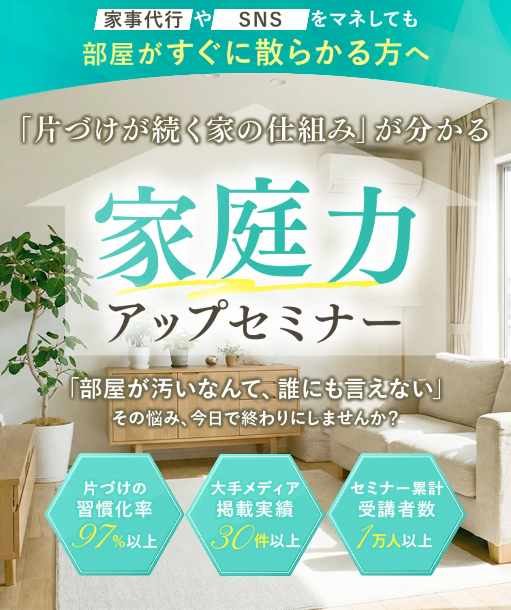
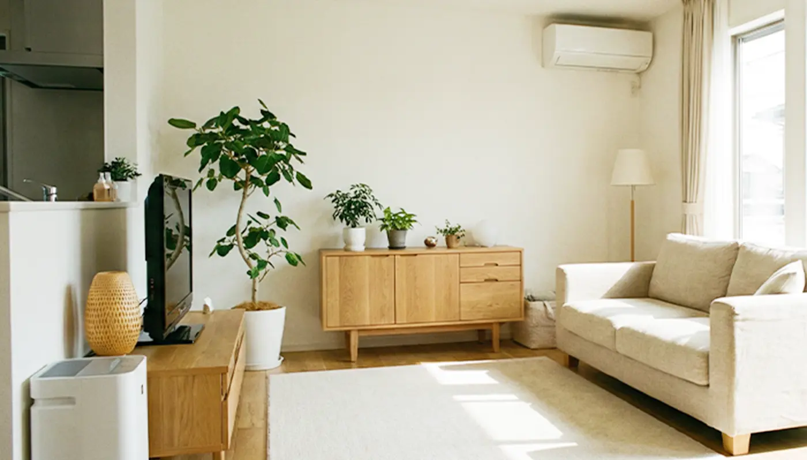

-
家事代行や片づけ業者に頼んでも
数週間後には元通り -
SNSや収納本を真似しても
すぐにリバウンド -
物が多すぎて、どこから
手をつければいいか分からない -
「いつか使うかも」「もったいない」で
捨てられない -
ダイニングテーブルが物置化し
家族の食卓がない -
夫や子どもが出しっぱなし
私だけ片づけ担当になっている -
「こんな部屋、人に見せられない…」と
来客が怖い
そしてもうひとつ。
片づけの悩みは“恥ずかしくて言いにくい”悩み
だからこそ、誰にも相談できず
何年もひとりで抱え込んでしまう方が
本当に多いんです。
でも安心してください。
同じ悩みで一歩踏み出したママたちが
ここから大きく変わっています。
そんな
“胸がぎゅっと苦しくなる瞬間”から
もう卒業しませんか？
仕事帰りに散乱した玄関を見た瞬間の絶望
休日が片づけだけで終わる虚しさ
そして何より辛いのは、
“私がダメなんだ” と自分を責めてしまうこと。
でも、断言します。
あなたは悪くありません。
ただ、正しい“片づけの仕組み”を
知らなかっただけです。
なぜ、本を読んでも業者に頼んでも
片づけは続かないのでしょうか？
まだ、その場しのぎにお金を捨て続けますか？
そうやって外側の解決に頼っていませんか？
厳しいようですが、
その“お金で一時的に解決しようとする行動”
こそが片づけが続かない最大の原因です。
あなたの家は今、まさに
“穴の空いたバケツ”状態 です。
バケツの穴＝「捨てられない」マインドの壁
蛇口＝いつの間にか増えていく物
スプーン＝あなたが日々がんばる片づけ
片づけ代行＝一時的に水を汲み出してもらうだけ
穴が開いたまま水（物）を入れ続けている限り、
あなたがいくら頑張っても、業者に頼んでも
必ずまた溜まります。
必要なのは、“水を掻き出すこと”ではなく
バケツの穴を塞ぐ“仕組み”です。

あなたが手に入れるのは
片づけが続く「仕組み」です。